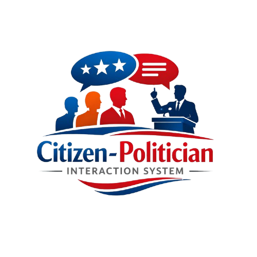
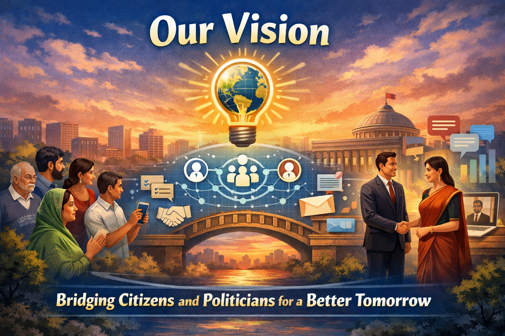

Empowering Citizens and Politicians to Connect
The Citizen–Politician Interaction System is a civic engagement platform designed to improve transparency, responsiveness, and collaboration between communities and public representatives. It brings public services closer to citizens by making it simple to raise concerns, share ideas, and receive timely updates from local government teams.

We help citizens submit issues, track progress, and connect with verified officials while enabling policymakers to listen, respond, and make data-informed decisions. Our goal is to build trust, encourage participation, and strengthen public accountability across every neighborhood.
Our mission is to make civic services more accessible, transparent, and responsive by connecting citizens directly with their representatives through a secure, easy-to-use digital platform. We focus on building trust through verified communication, clear timelines, and consistent updates that keep the public informed.
We aim to amplify community voices, speed up issue resolution, and foster shared responsibility so that every neighborhood can thrive and every concern is heard. Our platform promotes collaboration between citizens, local offices, and policymakers by organizing feedback, prioritizing urgent requests, and highlighting community needs in a transparent and respectful way.
We envision a future where every citizen has a direct, trusted channel to engage with public leaders, and every public office can respond quickly with clarity and accountability. By blending technology with civic responsibility, we strive to make governance more open and inclusive for all.

Our vision is to create connected neighborhoods where local challenges are visible, solutions are collaborative, and progress is measured openly. We believe transparent data, respectful dialogue, and community-led priorities can transform how public services are delivered and experienced.